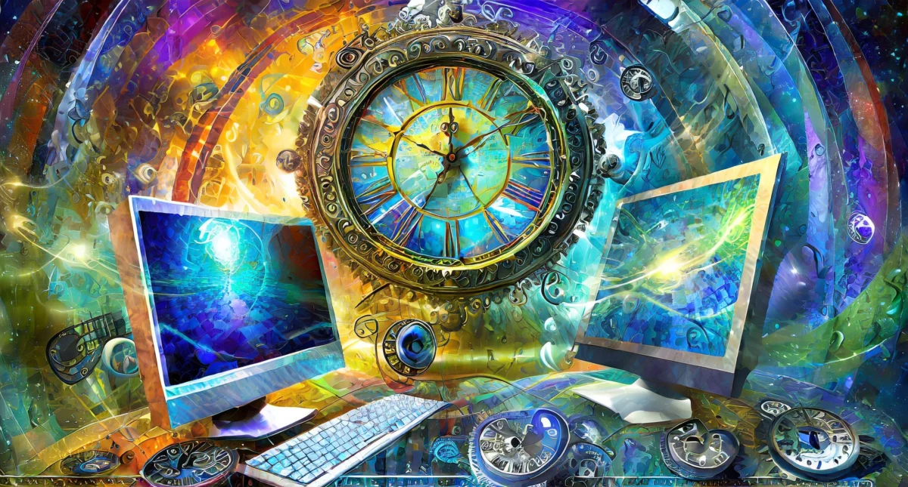
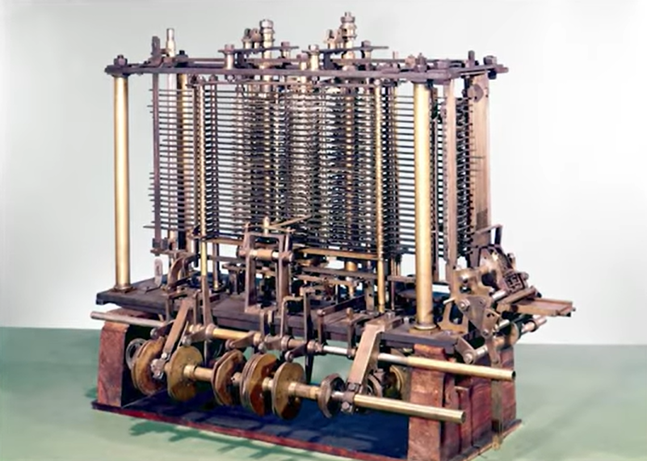

Historia y evolución de la Informática

Evolución Histórica de la Informática
La evolución histórica de la informática nos muestra un viaje desde los primeros dispositivos mecánicos de cálculo hasta las modernas tecnologías digitales. Desde la Máquina de Diferencias de Charles Babbage hasta los actuales smartphones, este campo ha visto transformaciones que han alterado radicalmente nuestra manera de vivir, trabajar y comunicarnos.
Proceso de desarrollo
Reflexiona por un momento sobre cómo la tecnología ha transformado la forma en que vivimos, trabajamos y nos comunicamos:
Los inicios de la informática
La historia de la informática es un relato fascinante que se remonta a los albores de la civilización humana. Desde los rudimentarios dispositivos de cálculo como el ábaco hasta las visionarias máquinas de Charles Babbage, los primeros pasos en la computación sentaron las bases para una revolución tecnológica que cambiaría el curso de la historia. En este análisis, exploraremos los orígenes de la informática, destacando la importancia del ábaco y la máquina analítica de Babbage, así como su impacto en el desarrollo de la computación moderna.
El Ábaco: La Primera Herramienta de Cálculo
El ábaco, una herramienta de cálculo antigua, es considerado uno de los primeros dispositivos utilizados para realizar operaciones aritméticas. Su origen se remonta a civilizaciones antiguas como la china y la griega, y su diseño básico consiste en cuentas que se mueven a lo largo de varillas o alambres. Aunque primitivo en comparación con las computadoras modernas, el ábaco proporcionó a los usuarios una manera eficiente de realizar cálculos matemáticos simples, sentando así las bases para el desarrollo de dispositivos más sofisticados en el futuro.
La Máquina Analítica de Charles Babbage: Un Salto Revolucionario
- 1822 Máquina de diferencia: Charles Babbage diseñó este dispositivo para calcular automáticamente tablas polinomios, permitiendo cálculos repetitivos sin intervención humana directa.

A mediados del siglo XIX, el matemático y científico británico Charles Babbage diseñó lo que se considera el precursor de la computadora moderna: la Máquina Analítica. Concebida como una máquina programable, la Máquina Analítica de Babbage tenía la capacidad de ejecutar una serie de instrucciones almacenadas en tarjetas perforadas, lo que la convertía en el primer intento documentado de automatizar el proceso de cálculo.
Contribuciones Fundamentales
Estos primeros dispositivos y máquinas de cálculo sentaron las bases para el desarrollo de la informática moderna de varias maneras fundamentales:
– Abstracción y Automatización
Tanto el ábaco como la Máquina Analítica de Babbage introdujeron conceptos clave como la abstracción y la automatización en el proceso de cálculo. Estos dispositivos permitieron a los usuarios delegar tareas repetitivas a una herramienta mecánica, liberando así tiempo y recursos humanos para otras actividades.
– Concepto de Almacenamiento y Procesamiento
La Máquina Analítica de Babbage introdujo la noción de almacenamiento y procesamiento de datos. A través de su sistema de tarjetas perforadas, la máquina podía almacenar instrucciones y datos, procesarlos secuencialmente y producir resultados de manera automatizada, anticipando así el concepto de la memoria de acceso aleatorio (RAM) y la unidad central de procesamiento (CPU) en las computadoras modernas.
– Influencia en la Investigación y Desarrollo
La Máquina Analítica de Babbage inspiró a futuros científicos y matemáticos a explorar y expandir los límites de lo que era posible en términos de cálculo mecánico. Su visión revolucionaria allanó el camino para generaciones posteriores de innovadores, cuyos esfuerzos finalmente llevarían al desarrollo de las computadoras digitales programables que conocemos hoy en día.
La era de los primeros ordenadores
Los primeros computadores marcaron un hito crucial en la evolución de la informática, introduciendo avances tecnológicos que transformaron radicalmente el procesamiento de datos y la computación. Desde la creación del ENIAC hasta el surgimiento de otros computadores de la primera generación, esta sección explorará cómo estos dispositivos pioneros sentaron las bases para la revolución informática.
Conclusión
La historia y la evolución de la informática representan un viaje fascinante a lo largo del cual hemos presenciado una serie de hitos significativos que han transformado radicalmente la forma en que interactuamos con la tecnología y entre nosotros. Desde los primeros dispositivos de cálculo como el ábaco y la máquina analítica de Babbage hasta los avances más recientes en la era digital como la computación en la nube, la inteligencia artificial y la computación cuántica, cada etapa ha dejado una marca indeleble en el panorama tecnológico.
La informática ha pasado de ser una disciplina esotérica y especializada a convertirse en una fuerza omnipresente que impregna todos los aspectos de nuestra vida cotidiana. Desde la forma en que trabajamos y nos comunicamos hasta cómo accedemos a la información y nos entretenemos, la tecnología informática ha revolucionado nuestra existencia de formas inimaginables.
A lo largo de los años, hemos presenciado cómo la informática ha democratizado el acceso a la información, ha aumentado la eficiencia en el trabajo, ha facilitado la comunicación global y ha fomentado la innovación en una variedad de campos. Cada avance tecnológico ha construido sobre los cimientos establecidos por sus predecesores, creando un ciclo continuo de innovación y progreso.
Mirando hacia el futuro, podemos anticipar un panorama tecnológico cada vez más emocionante y prometedor, donde los límites de lo que es posible seguirán expandiéndose. Con avances como la inteligencia artificial, la computación cuántica y la conectividad global en constante evolución, la informática continuará desempeñando un papel fundamental en la forma en que vivimos, trabajamos y exploramos el mundo que nos rodea. En resumen, la historia de la informática es un testimonio del ingenio humano y la capacidad de la tecnología para transformar nuestras vidas de maneras inimaginables.